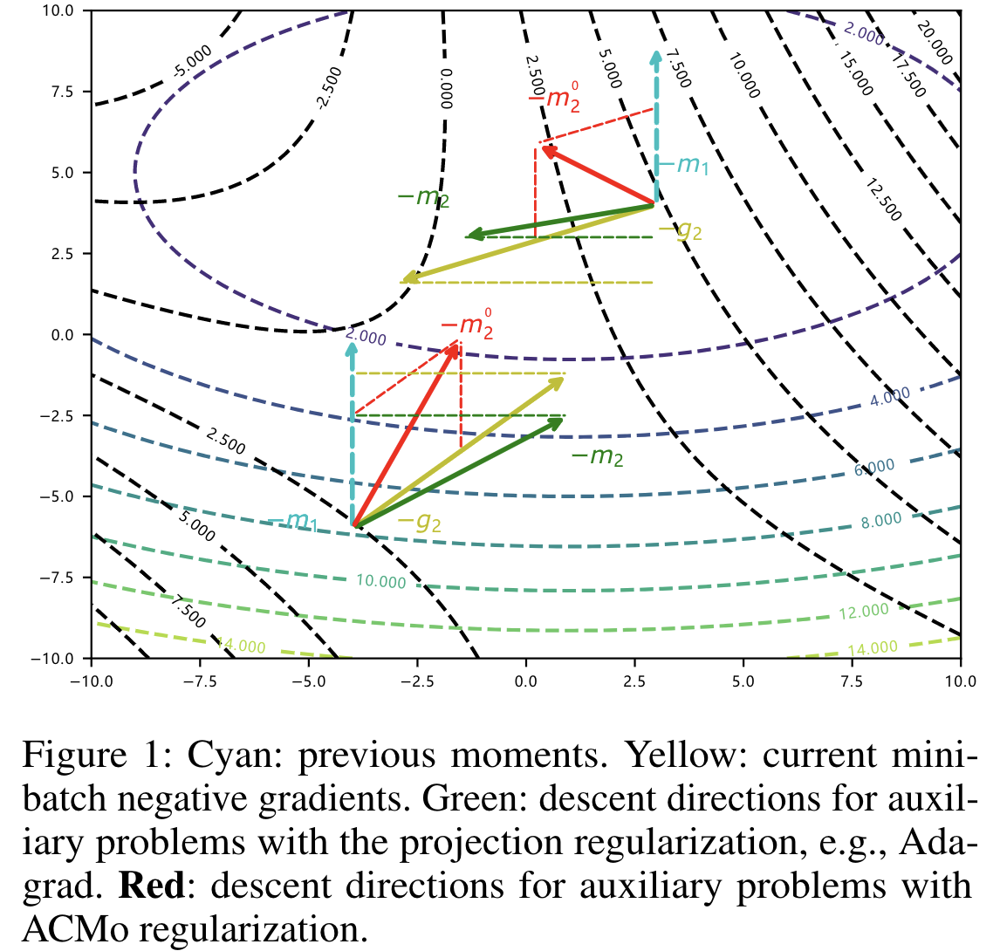
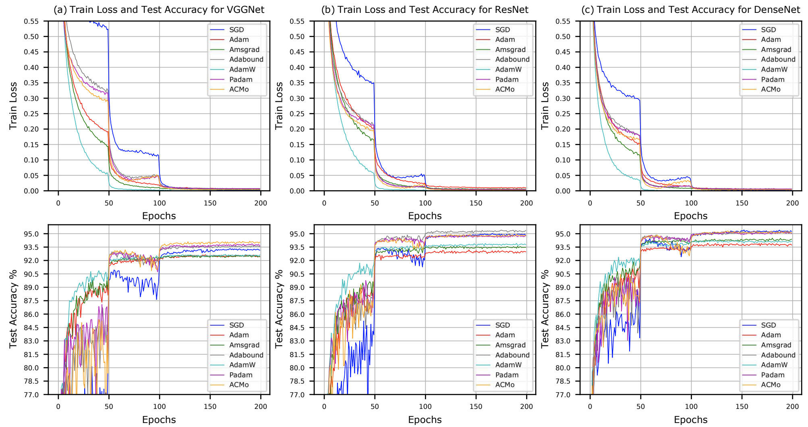
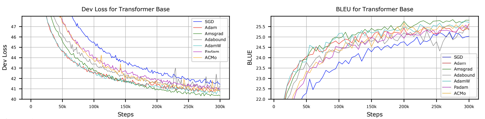
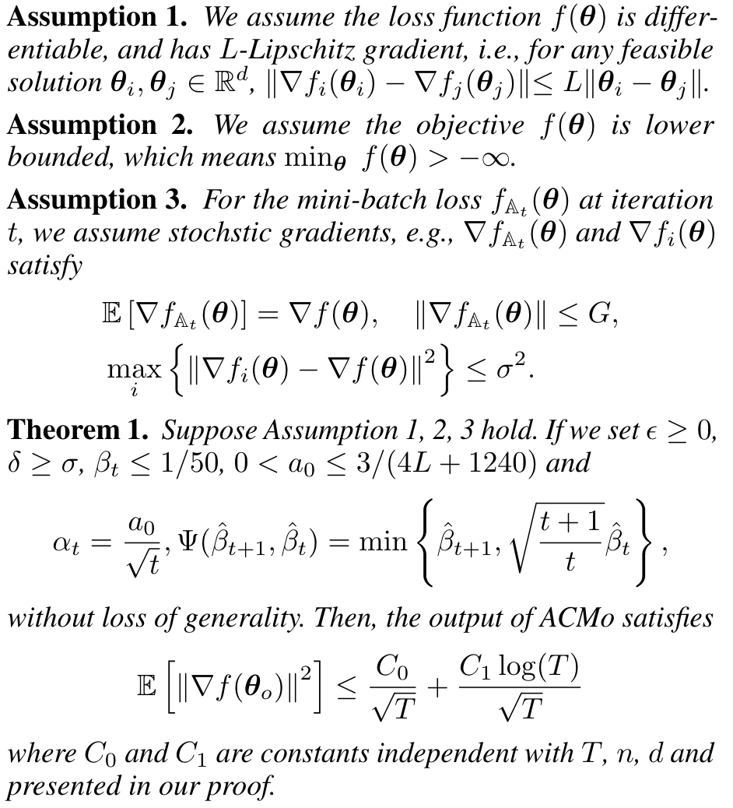

@inproceedings{huang2021acmo,
title= {ACMo: Angle-Calibrated Moment Methods for Stochastic Optimization},
author= {Xunpeng Huang, Runxin Xu, Hao Zhou, Zhe Wang, Zhengyang Liu, Lei Li},
booktitle = {Proceedings of the 34th AAAI Conference on Artificial Intelligence (AAAI'21)},
year= {2021}
}